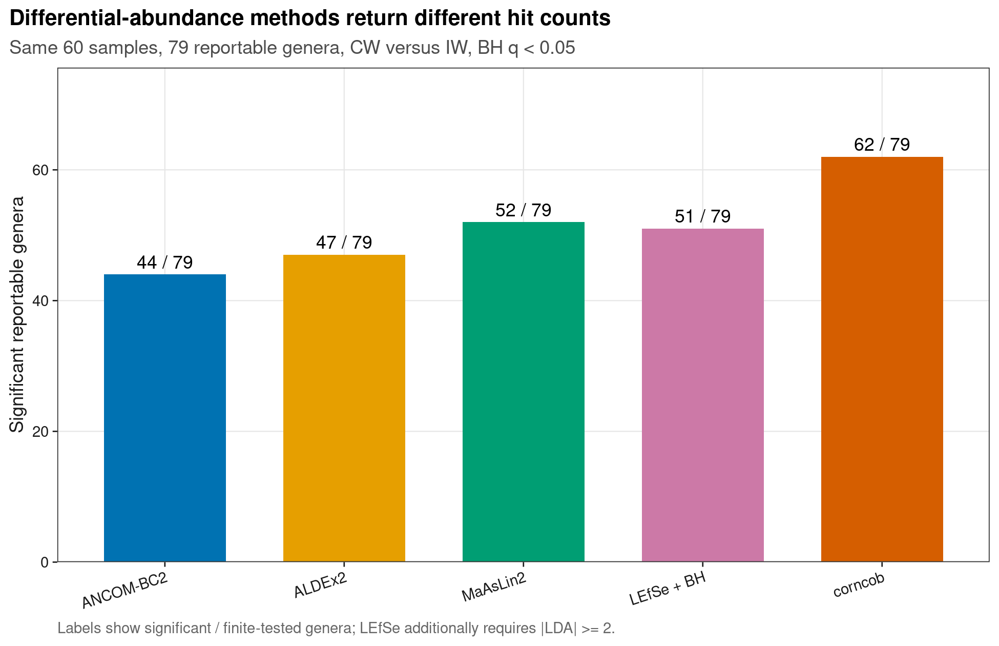
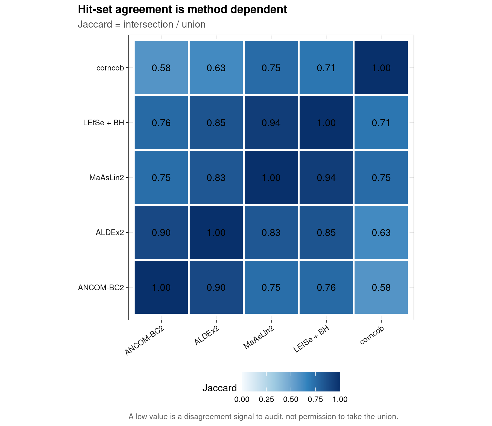
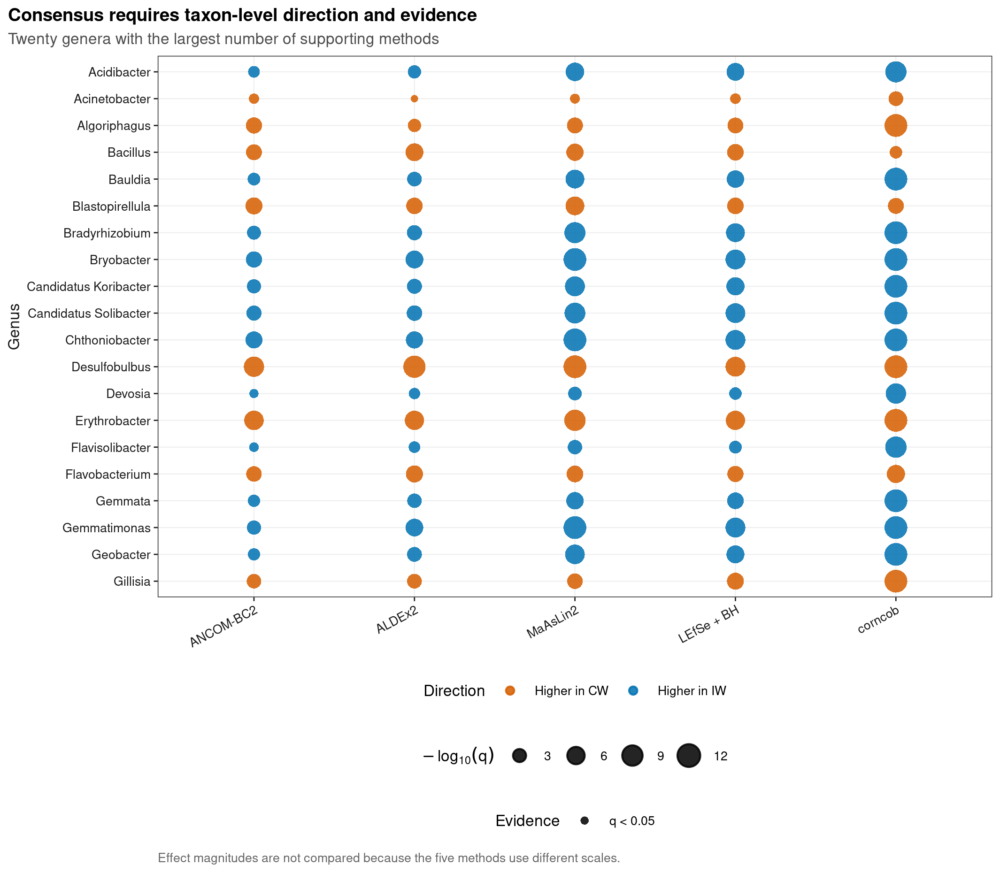

options(timeout = 600)
data_url <- "https://raw.githubusercontent.com/petemeng/microbiome-best-practices/3cb6a817e0c73ab7ecbec1cedc1ad80cbb9ecfaa/"
input_files <- c(
"data/small/metadata.tsv",
"data/small/otutab.tsv",
"data/small/taxonomy.tsv"
)
for (path in input_files) {
dir.create(dirname(path), recursive = TRUE, showWarnings = FALSE)
if (!file.exists(path)) download.file(paste0(data_url, path), path, mode = "wb", quiet = TRUE)
}差异方法横评（ANCOM-BC2/ALDEx2/MaAsLin2/LEfSe/corncob）
差异丰度方法为什么会给出不同答案？
Nearing et al. (2022)在 38 个 16S 数据集上比较 14 种差异丰度（differential abundance, DA）方法。其 Figure 1 展示了同一数据集换方法后，显著 feature 的比例可以大幅变化；Figure 3 进一步比较方法间重叠。下面用一套真实湿地数据做“同设计横评”：所有方法只允许改变统计模型，不允许改变数据或 contrast。
重要先给结论
五种方法的“显著”不是同一种证据：ANCOM-BC2估计 bias-corrected log fold change，ALDEx2使用 Dirichlet Monte Carlo log-ratio，MaAsLin2拟合可扩展协变量模型，LEfSe把秩检验与 LDA score 串联，corncob拟合 beta-binomial mean/dispersion。交集可作为优先验证层，union 不能叫 consensus；方法数量也不是投票真值。每个候选菌仍需检查效应方向、零比例、模型收敛、混杂与原始分布。
本页使用 microeco 2.0.0 随包分发的湿地 16S 三件套，预先限定 CW 对 IW。Feature selection 只看总体 prevalence 与总体 reads，不看 group label；未注释 reads 合成一个 denominator residual，但它不进入 biomarker 报告。
下载并读取本次分析的数据
需要 R，以及 ALDEx2、ANCOMBC、Maaslin2、S4Vectors、SummarizedExperiment、corncob、ggplot2、knitr、lefser、phyloseq、ragg、svglite。本次使用中国湿地的 OTU count 表、分类表和样本信息表。
在一个新建的文件夹中运行以下代码，下载文件后按文中的顺序继续分析：
library(ggplot2)
set.seed(20260731)
font_pub <- "sans"
pal_pub <- c(
blue = "#0072B2", orange = "#E69F00", green = "#009E73",
vermillion = "#D55E00", purple = "#CC79A7", sky = "#56B4E9",
yellow = "#F0E442", grey = "#6B7280"
)
scale_color_pub <- function(..., values = unname(pal_pub)) {
ggplot2::scale_color_manual(..., values = values)
}
scale_fill_pub <- function(..., values = unname(pal_pub)) {
ggplot2::scale_fill_manual(..., values = values)
}
theme_pub <- function(base_size = 10, base_family = font_pub) {
ggplot2::theme_bw(base_size = base_size, base_family = base_family) +
ggplot2::theme(
panel.grid.minor = ggplot2::element_blank(),
panel.grid.major = ggplot2::element_line(
colour = "#E6E6E6", linewidth = 0.25
),
axis.text = ggplot2::element_text(colour = "#1A1A1A"),
axis.title = ggplot2::element_text(colour = "#1A1A1A"),
axis.ticks = ggplot2::element_line(colour = "#1A1A1A", linewidth = 0.3),
plot.title.position = "plot",
plot.title = ggplot2::element_text(
face = "bold", size = ggplot2::rel(1.15)
),
plot.subtitle = ggplot2::element_text(colour = "#4D4D4D"),
plot.caption = ggplot2::element_text(colour = "#666666", hjust = 0),
strip.background = ggplot2::element_rect(
fill = "#F2F2F2", colour = "#B3B3B3", linewidth = 0.3
),
strip.text = ggplot2::element_text(face = "bold"),
legend.key = ggplot2::element_blank(), legend.position = "top"
)
}
save_pub <- function(
plot, file_base, width = 89, height = 70, units = "mm",
dpi = 600, write_svg = TRUE, write_tiff = TRUE,
base_family = font_pub
) {
dir.create(dirname(file_base), recursive = TRUE, showWarnings = FALSE)
ggplot2::ggsave(
paste0(file_base, ".pdf"), plot, width = width, height = height,
units = units, device = grDevices::cairo_pdf,
family = base_family, bg = "white"
)
if (write_svg) ggplot2::ggsave(
paste0(file_base, ".svg"), plot, width = width, height = height,
units = units, device = svglite::svglite, bg = "white"
)
ggplot2::ggsave(
paste0(file_base, ".png"), plot, width = width, height = height,
units = units, dpi = dpi, device = ragg::agg_png, bg = "white"
)
if (write_tiff) ggplot2::ggsave(
paste0(file_base, ".tiff"), plot, width = width, height = height,
units = units, dpi = dpi, device = ragg::agg_tiff,
compression = "lzw", bg = "white"
)
invisible(plot)
}读三件套、限定 contrast、按 lineage 聚合
read_keyed_tsv <- function(path) {
x <- readr::read_tsv(
path, show_col_types = FALSE, progress = FALSE,
name_repair = "minimal", na = character()
)
ids <- as.character(x[[1L]])
stopifnot(!anyDuplicated(ids))
out <- as.data.frame(x[-1L], check.names = FALSE)
rownames(out) <- ids
out
}
otutab_raw <- read_keyed_tsv("data/small/otutab.tsv")
taxonomy <- read_keyed_tsv("data/small/taxonomy.tsv")
metadata_all <- read_keyed_tsv("data/small/metadata.tsv")
otutab_all <- as.matrix(data.frame(
lapply(otutab_raw, as.integer), check.names = FALSE
))
rownames(otutab_all) <- rownames(otutab_raw)
sample_ids <- rownames(metadata_all)[metadata_all$Group %in% c("IW", "CW")]
metadata <- metadata_all[sample_ids, , drop = FALSE]
metadata$Group <- relevel(factor(metadata$Group), ref = "IW")
otutab <- otutab_all[, sample_ids, drop = FALSE]
rank_names <- c(
"Kingdom", "Phylum", "Class", "Order", "Family", "Genus", "Species"
)
clean_taxon <- function(x) {
x <- sub("^[A-Za-z]__", "", trimws(as.character(x)))
x[
is.na(x) | x == "" |
grepl(
"unclassified|unknown|unassigned|uncultured|metagenome",
x, ignore.case = TRUE
)
] <- NA_character_
x
}
taxonomy_clean <- as.data.frame(
lapply(taxonomy[rownames(otutab), rank_names], clean_taxon),
check.names = FALSE
)
known_genus <- !is.na(taxonomy_clean$Genus)
lineage_key <- apply(
taxonomy_clean[known_genus, rank_names[1:6], drop = FALSE], 1L,
function(x) paste(ifelse(is.na(x), "?", x), collapse = ";")
)
genus_counts <- rowsum(
otutab[known_genus, , drop = FALSE], lineage_key, reorder = FALSE
)
lineages <- rownames(genus_counts)
labels <- vapply(strsplit(lineages, ";", fixed = TRUE), tail, character(1), 1L)
feature_ids <- make.unique(paste0("Genus:", labels))
rownames(genus_counts) <- feature_ids
feature_info <- data.frame(
FeatureID = feature_ids, DisplayTaxon = labels, Lineage = lineages,
Reportable = TRUE, stringsAsFactors = FALSE, row.names = feature_ids
)
genus_counts <- rbind(
genus_counts,
Unclassified_residual = colSums(otutab[!known_genus, , drop = FALSE])
)
feature_info <- rbind(
feature_info,
data.frame(
FeatureID = "Unclassified_residual",
DisplayTaxon = "Unclassified residual",
Lineage = "Unclassified at genus rank", Reportable = FALSE,
row.names = "Unclassified_residual"
)
)
prevalence <- rowMeans(genus_counts > 0)
total_reads <- rowSums(genus_counts)
eligible <- prevalence >= 0.10 & total_reads >= 20
selection_score <- prevalence * log1p(total_reads)
selected_ids <- names(sort(selection_score[eligible], decreasing = TRUE))[1:80]
counts <- genus_counts[selected_ids, , drop = FALSE]
feature_info <- feature_info[selected_ids, , drop = FALSE]
stopifnot(
ncol(counts) == 60L,
nrow(counts) == 80L,
sum(metadata$Group == "IW") == 30L,
sum(metadata$Group == "CW") == 30L,
"Unclassified_residual" %in% rownames(counts),
sum(feature_info$Reportable) == 79L
)
data.frame(
Samples = ncol(counts), TestedRows = nrow(counts),
ReportableGenera = sum(feature_info$Reportable),
MinPrevalence = min(prevalence[selected_ids]),
ReadFractionRetained = sum(counts) / sum(otutab)
) Samples TestedRows ReportableGenera MinPrevalence ReadFractionRetained
1 60 80 79 0.8333333 0.8907488下载完整 R 脚本。脚本包含数据下载、计算和图形导出。
首次使用时安装 R 包
install.packages(c(
"BiocManager", "corncob", "ggplot2", "patchwork", "phyloseq",
"ragg", "readr", "scales", "svglite", "systemfonts"
))
BiocManager::install(version = "3.19", ask = FALSE)
BiocManager::install(
c("ANCOMBC", "ALDEx2", "Maaslin2", "lefser", "SummarizedExperiment"),
ask = FALSE
)横评必须锁死设计，只让模型变化
五种方法估计的量不同
- ANCOM-BC2：在 log abundance 框架中校正 sample-specific sampling fraction bias，并可处理协变量、重复测量和多组比较；本页只拟合两组固定效应。
- ALDEx2：从每个样本的 Dirichlet posterior 反复抽样，计算 CLR 后的组间检验与 standardized effect；Monte Carlo 次数会影响精度。
- MaAsLin2：先按配置 normalization/transformation，再拟合 general linear model；优势是协变量设计灵活，结论依赖明确的数据变换合同。
- LEfSe：Kruskal–Wallis/Wilcoxon screen 后用 LDA score 表示 class separation。经典流程通常不做全 feature 的 FDR；本页额外计算 BH q-value，避免把 raw-p screen 当成 FDR 控制。
- corncob：对每个 taxon 的 count/total 拟合 beta-binomial regression，可分别建模 mean 与 dispersion；系数在 logit-relative-abundance 尺度。
“相同 FDR”不等于“相同效应门槛”
本页用 q < 0.05 作为共同统计门槛；LEfSe 还保留其 |LDA| >= 2 的方法特异门槛。五种 effect 的单位不同，不能把数值高低横向排名。可比较的是方向、方法内排序、hit set 与同一 feature 的证据是否一致。
Consensus 是证据分层，不是多数表决
若某 taxon 被 4/5 方法支持，它适合进入优先验证清单；这不证明它“真实”。多个方法可能共享相同 composition bias、样本非独立或未测混杂。反过来，只有一个专为当前设计匹配的方法显著，也不能仅因票少就自动删除。方法间 disagreement 是需要审计的数据，而不是应该被隐藏的噪声。
深入：为什么统一 preprocessing 仍不保证公平
不同方法对输入有不同假设。ALDEx2和 ANCOM-BC2需要原始 count；MaAsLin2在本页内部执行 TSS + LOG；LEfSe接受 total-sum-scaled abundance；corncob同时使用 taxon count 与 library total。所谓“同一表”是同一原始样本和 feature universe，而不是强迫所有方法吃同一个已转换矩阵。公平横评要记录每个方法的内部 normalization、zero handling、effect 定义和失败行。
在同一比较中运行五种差异方法
建立同一个 phyloseq 对象
taxonomy_model <- matrix(
feature_info$DisplayTaxon,
ncol = 1L,
dimnames = list(rownames(feature_info), "Genus")
)
ps <- phyloseq::phyloseq(
phyloseq::otu_table(counts, taxa_are_rows = TRUE),
phyloseq::tax_table(taxonomy_model),
phyloseq::sample_data(metadata)
)
descriptive_direction <- rowMeans(
log2(counts[, metadata$Group == "CW", drop = FALSE] + 0.5)
) - rowMeans(
log2(counts[, metadata$Group == "IW", drop = FALSE] + 0.5)
)descriptive_direction只用于核对所有软件最后都被编码成“正值 = CW 较高”；它不替代任何方法的正式 effect。
ANCOM-BC2：估计偏倚校正后的对数倍数变化
set.seed(20260731)
ancom_warnings <- character()
ancom_fit <- withCallingHandlers(
ANCOMBC::ancombc2(
data = ps,
fix_formula = "Group",
p_adj_method = "BH",
pseudo_sens = FALSE,
prv_cut = 0,
lib_cut = 0,
group = "Group",
struc_zero = TRUE,
neg_lb = FALSE,
global = FALSE,
pairwise = FALSE,
dunnet = FALSE,
trend = FALSE,
n_cl = 1,
verbose = FALSE
),
warning = function(w) {
ancom_warnings <<- c(ancom_warnings, conditionMessage(w))
invokeRestart("muffleWarning")
}
)
ancom_res <- ancom_fit$res
ancom_results <- data.frame(
FeatureID = ancom_res$taxon,
Method = "ANCOM-BC2",
EffectCW = ancom_res$lfc_GroupCW,
StandardError = ancom_res$se_GroupCW,
PValue = ancom_res$p_GroupCW,
QValue = ancom_res$q_GroupCW,
stringsAsFactors = FALSE
)
ancom_results$Significant <- with(
ancom_results,
is.finite(EffectCW) & is.finite(QValue) & QValue < 0.05
)
ancom_diagnostics <- data.frame(
Rows = nrow(ancom_results),
FiniteGroupEffects = sum(
is.finite(ancom_results$EffectCW) & is.finite(ancom_results$StandardError)
),
CapturedWarnings = length(ancom_warnings),
stringsAsFactors = FALSE
)
ancom_diagnostics Rows FiniteGroupEffects CapturedWarnings
1 80 80 1捕获 warning 不是删除证据：正式交付应保留 warning ledger，并把非有限 coefficient 排除。这里要求至少 95% 的 GroupCW coefficient 与 standard error 有限；intercept 诊断不能代替目标 contrast 诊断。
ALDEx2：Dirichlet Monte Carlo + IQLR reference
set.seed(20260731)
aldex_clr <- ALDEx2::aldex.clr(
counts,
as.character(metadata$Group),
mc.samples = 128,
denom = "iqlr",
verbose = FALSE
)
aldex_test <- ALDEx2::aldex.ttest(
aldex_clr, paired.test = FALSE, verbose = FALSE
)
aldex_effect <- ALDEx2::aldex.effect(
aldex_clr, paired.test = FALSE, verbose = FALSE
)
aldex_results <- data.frame(
FeatureID = rownames(aldex_test),
Method = "ALDEx2",
EffectCW = -aldex_effect$effect,
StandardError = NA_real_,
PValue = aldex_test$we.ep,
QValue = aldex_test$we.eBH,
stringsAsFactors = FALSE
)
aldex_results$Significant <- with(
aldex_results,
is.finite(EffectCW) & is.finite(QValue) & QValue < 0.05
)ALDEx2 输出的 diff.btw/effect 在本次 level 顺序下为 IW − CW，所以显式乘以 -1；代码随后用原始数据的描述方向核对符号。
MaAsLin2：TSS + LOG 的两组线性模型
maaslin_output <- file.path(
tempdir(), paste0("article31-maaslin2-", Sys.getpid())
)
dir.create(maaslin_output, recursive = TRUE, showWarnings = FALSE)
maaslin_console <- utils::capture.output({
maaslin_fit <- Maaslin2::Maaslin2(
input_data = as.data.frame(t(counts), check.names = FALSE),
input_metadata = data.frame(
Group = metadata$Group, row.names = rownames(metadata)
),
output = maaslin_output,
min_abundance = 0,
min_prevalence = 0,
normalization = "TSS",
transform = "LOG",
analysis_method = "LM",
fixed_effects = "Group",
correction = "BH",
standardize = FALSE,
cores = 1,
plot_heatmap = FALSE,
plot_scatter = FALSE,
save_models = FALSE,
max_significance = 1,
reference = "Group,IW"
)
}, type = "output")
maaslin_table <- maaslin_fit$results
maaslin_table <- maaslin_table[
maaslin_table$metadata == "Group" & maaslin_table$value == "CW",
]
maaslin_feature_map <- setNames(
rownames(counts),
make.names(rownames(counts), unique = TRUE)
)
maaslin_results <- data.frame(
FeatureID = unname(maaslin_feature_map[maaslin_table$feature]),
Method = "MaAsLin2",
EffectCW = maaslin_table$coef,
StandardError = maaslin_table$stderr,
PValue = maaslin_table$pval,
QValue = maaslin_table$qval,
stringsAsFactors = FALSE
)
maaslin_results$Significant <- with(
maaslin_results,
is.finite(EffectCW) & is.finite(QValue) & QValue < 0.05
)LEfSe：保留 LDA score，补上全 feature BH
relative_per_million <- sweep(counts, 2L, colSums(counts), "/") * 1e6
lefse_input <- SummarizedExperiment::SummarizedExperiment(
assays = list(relative_abundance = relative_per_million),
colData = S4Vectors::DataFrame(
GROUP = metadata$Group, row.names = rownames(metadata)
)
)
set.seed(20260731)
lefse_fit <- lefser::lefser(
lefse_input,
kruskal.threshold = 1,
wilcox.threshold = 1,
lda.threshold = 0,
groupCol = "GROUP",
checkAbundances = TRUE
)
lefse_p <- vapply(rownames(counts), function(feature_id) {
stats::wilcox.test(
relative_per_million[feature_id, metadata$Group == "CW"],
relative_per_million[feature_id, metadata$Group == "IW"],
exact = FALSE
)$p.value
}, numeric(1))
lefse_q <- stats::p.adjust(lefse_p, method = "BH")
lefse_scores <- setNames(lefse_fit$scores, lefse_fit$Names)
lefse_results <- data.frame(
FeatureID = rownames(counts),
Method = "LEfSe + BH",
EffectCW = sign(descriptive_direction) * abs(lefse_scores[rownames(counts)]),
StandardError = NA_real_,
PValue = unname(lefse_p[rownames(counts)]),
QValue = unname(lefse_q[rownames(counts)]),
stringsAsFactors = FALSE
)
lefse_results$Significant <- with(
lefse_results,
is.finite(EffectCW) & is.finite(QValue) &
QValue < 0.05 & abs(EffectCW) >= 2
)kruskal.threshold = 1和lda.threshold = 0只让软件返回完整 LDA ledger；报告门槛在下一步统一施加。若直接使用经典 raw-p LEfSe 输出，应明确写“未控制全 feature FDR”，不能把它与 BH q-value 混称。
corncob：beta-binomial mean model
set.seed(20260731)
corncob_fit <- corncob::differentialTest(
formula = ~ Group,
phi.formula = ~ Group,
formula_null = ~ 1,
phi.formula_null = ~ Group,
data = ps,
test = "Wald",
boot = FALSE,
fdr_cutoff = 1,
full_output = TRUE,
verbose = FALSE
)
corncob_rows <- lapply(seq_along(corncob_fit$p), function(i) {
feature_id <- names(corncob_fit$p)[[i]]
model_summary <- corncob_fit$all_models[[i]]
coefficient_table <- if (is.null(model_summary)) NULL else coef(model_summary)
coefficient_name <- "mu.GroupCW"
has_coefficient <- !is.null(coefficient_table) &&
coefficient_name %in% rownames(coefficient_table)
data.frame(
FeatureID = feature_id,
Method = "corncob",
EffectCW = if (has_coefficient) coefficient_table[coefficient_name, "Estimate"] else NA_real_,
StandardError = if (has_coefficient) coefficient_table[coefficient_name, "Std. Error"] else NA_real_,
PValue = unname(corncob_fit$p[[i]]),
QValue = unname(corncob_fit$p_fdr[[i]]),
stringsAsFactors = FALSE
)
})
corncob_results <- do.call(rbind, corncob_rows)
corncob_results$Significant <- with(
corncob_results,
is.finite(EffectCW) & is.finite(QValue) & QValue < 0.05
)统一方向、过滤 residual、计算 overlap
method_order <- c("ANCOM-BC2", "ALDEx2", "MaAsLin2", "LEfSe + BH", "corncob")
method_results_all <- rbind(
ancom_results, aldex_results, maaslin_results, lefse_results, corncob_results
)
method_results_all$DisplayTaxon <- feature_info[
method_results_all$FeatureID, "DisplayTaxon"
]
method_results_all$Reportable <- feature_info[
method_results_all$FeatureID, "Reportable"
]
method_results_all$Method <- factor(method_results_all$Method, levels = method_order)
method_results <- method_results_all[
!is.na(method_results_all$Reportable) & method_results_all$Reportable,
]
direction_check <- do.call(rbind, lapply(method_order, function(method_name) {
z <- method_results[method_results$Method == method_name, ]
common <- intersect(z$FeatureID, names(descriptive_direction))
data.frame(
Method = method_name,
FiniteRows = sum(is.finite(z$EffectCW)),
SpearmanWithDescriptiveDirection = suppressWarnings(stats::cor(
z$EffectCW[match(common, z$FeatureID)],
descriptive_direction[common],
method = "spearman", use = "complete.obs"
)),
stringsAsFactors = FALSE
)
}))
hit_sets <- setNames(lapply(method_order, function(method_name) {
z <- method_results[
method_results$Method == method_name & method_results$Significant,
]
unique(z$FeatureID)
}), method_order)
hit_summary <- data.frame(
Method = factor(method_order, levels = method_order),
Tested = vapply(method_order, function(x) {
sum(method_results$Method == x & is.finite(method_results$QValue))
}, integer(1)),
Significant = lengths(hit_sets),
stringsAsFactors = FALSE
)
jaccard_matrix <- outer(method_order, method_order, Vectorize(function(a, b) {
union_set <- union(hit_sets[[a]], hit_sets[[b]])
if (length(union_set) == 0L) 1 else
length(intersect(hit_sets[[a]], hit_sets[[b]])) / length(union_set)
}))
dimnames(jaccard_matrix) <- list(method_order, method_order)
feature_support <- aggregate(
Significant ~ FeatureID + DisplayTaxon,
data = method_results,
FUN = sum
)
names(feature_support)[names(feature_support) == "Significant"] <- "MethodSupport"
feature_support <- feature_support[order(
-feature_support$MethodSupport, feature_support$DisplayTaxon
), ]
stopifnot(
nrow(method_results_all) == 400L,
all(direction_check$FiniteRows >= 75L),
all(direction_check$SpearmanWithDescriptiveDirection > 0.5),
all(diag(jaccard_matrix) == 1),
all(jaccard_matrix >= 0 & jaccard_matrix <= 1),
ancom_diagnostics$FiniteGroupEffects >= 76L
)
hit_summary
direction_check
head(feature_support, 15) Method Tested Significant
ANCOM-BC2 ANCOM-BC2 79 44
ALDEx2 ALDEx2 79 47
MaAsLin2 MaAsLin2 79 52
LEfSe + BH LEfSe + BH 79 51
corncob corncob 79 62
Method FiniteRows SpearmanWithDescriptiveDirection
1 ANCOM-BC2 79 0.9971762
2 ALDEx2 79 0.9769231
3 MaAsLin2 79 0.9991480
4 LEfSe + BH 79 0.8507790
5 corncob 79 0.9175998
FeatureID DisplayTaxon MethodSupport
1 Genus:Acidibacter Acidibacter 5
4 Genus:Acinetobacter Acinetobacter 5
5 Genus:Algoriphagus Algoriphagus 5
12 Genus:Bacillus Bacillus 5
13 Genus:Bauldia Bauldia 5
15 Genus:Blastopirellula Blastopirellula 5
16 Genus:Bradyrhizobium Bradyrhizobium 5
17 Genus:Bryobacter Bryobacter 5
18 Genus:Candidatus Koribacter Candidatus Koribacter 5
19 Genus:Candidatus Solibacter Candidatus Solibacter 5
21 Genus:Chthoniobacter Chthoniobacter 5
26 Genus:Desulfobulbus Desulfobulbus 5
28 Genus:Devosia Devosia 5
29 Genus:Erythrobacter Erythrobacter 5
32 Genus:Flavisolibacter Flavisolibacter 5不同方法的结果为什么不能按“投票”决定？
method_audit <- data.frame(
Method = method_order,
PrimaryInput = c(
"Counts", "Counts", "Counts; internal TSS + LOG",
"Relative abundance", "Taxon count / library total"
),
ReportedEffect = c(
"Bias-corrected log abundance coefficient",
"Standardized CLR effect",
"Linear-model coefficient after transform",
"Signed LDA score",
"Beta-binomial mean logit coefficient"
),
UpgradeApplied = c(
"Finite coefficient and warning audit",
"128 Monte Carlo samples; IQLR reference",
"Reference level, normalization and transform fixed",
"All-feature BH plus |LDA| >= 2",
"Mean and dispersion formulas reported separately"
),
stringsAsFactors = FALSE
)
knitr::kable(method_audit, caption = "Method-specific estimands and audit upgrades")| Method | PrimaryInput | ReportedEffect | UpgradeApplied |
|---|---|---|---|
| ANCOM-BC2 | Counts | Bias-corrected log abundance coefficient | Finite coefficient and warning audit |
| ALDEx2 | Counts | Standardized CLR effect | 128 Monte Carlo samples; IQLR reference |
| MaAsLin2 | Counts; internal TSS + LOG | Linear-model coefficient after transform | Reference level, normalization and transform fixed |
| LEfSe + BH | Relative abundance | Signed LDA score | All-feature BH plus |LDA| >= 2 |
| corncob | Taxon count / library total | Beta-binomial mean logit coefficient | Mean and dispersion formulas reported separately |
横评中最容易伪造“方法差异”的做法，是让每个软件使用不同 prevalence filter、不同 rank、不同 reference group 或不同 multiple-testing rule。本页把这些选择锁死；仍然出现的差异才主要来自模型和 effect 定义。结果表应永久保留所有 tested rows、失败/非有限 rows、raw p、q、effect、standard error 和 direction coding。
对于有 batch、site、age、paired subject 或 repeated visit 的研究，不应把这里的 ~ Group 原样照搬。先写设计矩阵和 exchangeability/subject 结构，再挑能表达该结构的方法；无法表达设计的方法只能做 sensitivity，不应获得同等解释权。
比较效应、检验对象与方法一致性
图 1：先展示每个方法测试了多少、报了多少
hit_count_plot <- ggplot(hit_summary, aes(x = Method, y = Significant, fill = Method)) +
geom_col(width = 0.68, show.legend = FALSE) +
geom_text(
aes(label = paste0(Significant, " / ", Tested)),
vjust = -0.45, family = font_pub, size = 3
) +
scale_fill_manual(values = c(
"ANCOM-BC2" = pal_pub[["blue"]],
"ALDEx2" = pal_pub[["orange"]],
"MaAsLin2" = pal_pub[["green"]],
"LEfSe + BH" = pal_pub[["purple"]],
"corncob" = pal_pub[["vermillion"]]
)) +
scale_y_continuous(
limits = c(0, max(hit_summary$Significant) * 1.18 + 1),
expand = expansion(mult = c(0, 0.02))
) +
labs(
title = "Differential-abundance methods return different hit counts",
subtitle = "Same 60 samples, 79 reportable genera, CW versus IW, BH q < 0.05",
x = NULL, y = "Significant reportable genera",
caption = "Labels show significant / finite-tested genera; LEfSe additionally requires |LDA| >= 2."
) +
theme_pub(base_size = 8.8) +
theme(axis.text.x = element_text(angle = 18, hjust = 1))
save_pub(hit_count_plot, "figures/31-da-hit-counts", width = 165, height = 107)
hit_count_plot
图 2：Jaccard 只衡量 hit set 重叠，不衡量真值
jaccard_plot_data <- as.data.frame(as.table(jaccard_matrix))
names(jaccard_plot_data) <- c("Method1", "Method2", "Jaccard")
jaccard_plot <- ggplot(
jaccard_plot_data,
aes(x = Method1, y = Method2, fill = Jaccard)
) +
geom_tile(colour = "white", linewidth = 0.7) +
geom_text(aes(label = sprintf("%.2f", Jaccard)), family = font_pub, size = 3) +
scale_fill_gradientn(
colours = c("#F7FBFF", "#9ECAE1", "#3182BD", "#08306B"),
limits = c(0, 1)
) +
coord_equal() +
labs(
title = "Hit-set agreement is method dependent",
subtitle = "Jaccard = intersection / union",
x = NULL, y = NULL, fill = "Jaccard",
caption = "A low value is a disagreement signal to audit, not permission to take the union."
) +
theme_pub(base_size = 8.5) +
theme(
panel.grid = element_blank(),
axis.text.x = element_text(angle = 35, hjust = 1),
legend.position = "bottom"
)
save_pub(jaccard_plot, "figures/31-da-jaccard", width = 152, height = 132)
jaccard_plot
图 3：把方向和显著性放回每个 taxon
top_support <- head(feature_support$FeatureID, 20L)
evidence_plot_data <- method_results[
method_results$FeatureID %in% top_support,
]
evidence_plot_data$DisplayTaxon <- factor(
evidence_plot_data$DisplayTaxon,
levels = rev(feature_support$DisplayTaxon[
match(top_support, feature_support$FeatureID)
])
)
evidence_plot_data$Direction <- ifelse(
evidence_plot_data$EffectCW >= 0, "Higher in CW", "Higher in IW"
)
evidence_plot_data$Evidence <- ifelse(
evidence_plot_data$Significant, "q < 0.05", "Not significant"
)
evidence_map_plot <- ggplot(
evidence_plot_data,
aes(x = Method, y = DisplayTaxon)
) +
geom_point(
aes(colour = Direction, shape = Evidence, size = -log10(pmax(QValue, 1e-12))),
alpha = 0.86, stroke = 0.7
) +
scale_colour_manual(values = c(
"Higher in CW" = pal_pub[["vermillion"]],
"Higher in IW" = pal_pub[["blue"]]
)) +
scale_shape_manual(values = c("q < 0.05" = 16, "Not significant" = 1)) +
scale_size_continuous(range = c(1.3, 5.0), name = expression(-log[10](q))) +
labs(
title = "Consensus requires taxon-level direction and evidence",
subtitle = "Twenty genera with the largest number of supporting methods",
x = NULL, y = "Genus", colour = "Direction", shape = "Evidence",
caption = "Effect magnitudes are not compared because the five methods use different scales."
) +
theme_pub(base_size = 8.0) +
theme(
panel.grid.major = element_line(colour = "#EEEEEE", linewidth = 0.25),
axis.text.x = element_text(angle = 28, hjust = 1),
legend.position = "bottom", legend.box = "vertical"
)
save_pub(evidence_map_plot, "figures/31-da-evidence-map", width = 180, height = 158)
evidence_map_plot
expected_bases <- c(
"figures/31-da-hit-counts", "figures/31-da-jaccard",
"figures/31-da-evidence-map"
)
expected_files <- as.vector(outer(
expected_bases, c(".pdf", ".svg", ".png", ".tiff"), paste0
))
stopifnot(
all(file.exists(expected_files)),
nrow(hit_summary) == 5L,
nrow(direction_check) == 5L,
max(feature_support$MethodSupport) >= 1L
)常见坑
注意坑 1：每个方法各用一套 filter
先锁定 sample universe、rank、prevalence、minimum count 和 contrast。否则 hit 数差异混合了 preprocessing 与模型差异，横评无法解释。
注意坑 2：把 union 叫作 consensus
Union 最大化 sensitivity，也最大化任一方法的 false positive 输入。交集/支持度只能用于分层；正式结论仍需预声明 primary method 与独立验证。
注意坑 3：直接比较五列 effect 数值
log abundance、standardized CLR effect、transformed LM coefficient、LDA score 与 logit coefficient 不同量纲。只比较符号、方法内排序和置信区间，不画一条共享数值轴冒充可比。
注意坑 4：把经典 LEfSe raw p 当作 FDR
LEfSe 的 LDA threshold 不是 multiple-testing correction。本页额外对全部 tested genera 的 Wilcoxon p-value 做 BH，再与 LDA 门槛取交集。
注意坑 5：忽略 reference level
软件可能输出 IW − CW、CW − IW，或按字母顺序编码。Methods 和表头明确“positive = CW higher”，并用原始分布自动核对方向。
注意坑 6：过滤掉模型失败行再报 tested n
tested、finite、failed 和 significant 必须分别计数。只展示成功行会夸大稳定性，也让不同方法的分母不再一致。
注意坑 7：用未注释 residual 当 biomarker
Residual 保住 denominator，不代表一个共同祖先或可培养 taxon。它可进入模型校准，但必须从命名、机制与验证清单排除。
注意坑 8：复杂设计仍只写 ~ Group
Batch、site、paired subject、time、diet、medication 与 sequencing run 都可能改变结果。能否正确表达设计，比工具票数更重要。
报告差异丰度方法与多重检验的方法与限制
Differential abundance was evaluated in a prespecified two-group comparison (CW versus IW; 30 independent samples per group). ASVs were aggregated at genus rank using complete taxonomic lineages. Genera present in at least 10% of the 60 samples and represented by at least 20 total reads were eligible; the 80 rows with the largest group-blind prevalence × log(1 + total reads) score were retained, comprising 79 reportable genera and one unclassified denominator residual. The residual was retained during normalization/model fitting but excluded from biomarker interpretation. Five methods were run on the same sample and feature universe with seed 20260731: ANCOM-BC2 2.6.0 (
fix_formula = "Group", BH correction), ALDEx2 1.36.0 (128 Dirichlet Monte Carlo instances, IQLR denominator, Welch test), MaAsLin2 1.18.0 (TSS normalization, log transformation, linear model, IW reference, BH correction), lefser 1.14.0 (Wilcoxon screen and LDA score) with an additional all-feature BH correction, and corncob 0.4.2 (beta-binomial Wald test with group effects in the mean and dispersion models). Significance was defined as BH q < 0.05; LEfSe additionally required |LDA| >= 2. Effects were reoriented so that positive values indicated higher abundance in CW. Method-specific tested, finite, failed, and significant counts were retained. Hit-set overlap was summarized by Jaccard similarity; unions were not interpreted as consensus discoveries.
替换 contrast、独立实验单位、filter、primary method、协变量公式、random-effect/subject 结构和 effect 门槛。若横评只是 sensitivity analysis，Methods 还应明确哪一种方法承担主结论。
将差异丰度方法与多重检验用于自己的研究
只替换路径、分组列和 contrast
otutab_raw <- read_keyed_tsv("your_data/otutab.tsv")
taxonomy <- read_keyed_tsv("your_data/taxonomy.tsv")
metadata_all <- read_keyed_tsv("your_data/metadata.tsv")
group_column <- "Treatment"
reference_group <- "Control"
comparison_group <- "Treatment"不要先把三件套转成百分比保存。每个方法从 raw counts 出发，在方法内部执行它需要的 normalization/transformation。
taxonomy 单列时先拆七列
rank_names <- c(
"Kingdom", "Phylum", "Class", "Order", "Family", "Genus", "Species"
)
parts <- strsplit(taxonomy_raw$Taxon, ";", fixed = TRUE)
taxonomy_matrix <- t(vapply(parts, function(x) {
x <- trimws(x); length(x) <- 7L; x
}, character(7L)))
taxonomy <- as.data.frame(taxonomy_matrix, stringsAsFactors = FALSE)
names(taxonomy) <- rank_names
rownames(taxonomy) <- taxonomy_raw$FeatureID比较方法前确定输入、对比方向与筛选规则
至少写下：实验单位、排除样本、rank、known/unknown 处理、prevalence、minimum total、primary contrast、reference level、协变量、interaction、FDR method、effect threshold、primary method 和 validation set。随后给每个工具做 input/output adapter，而不是改变合同迎合默认参数。
保存机器可审计的长表
每行至少包含 FeatureID、完整 lineage、method、contrast、effect、effect unit、SE/CI、raw p、q、significant、convergence/status、zero prevalence、tested sample count 和 package version。图只是长表的一个视图，不能成为唯一结果文件。
参考
- Nearing JT, Douglas GM, Hayes MG, et al. Microbiome differential abundance methods produce different results across 38 datasets. Nature Communications. 2022;13:342. doi:10.1038/s41467-022-28034-z.
- Lin H, Peddada SD. Analysis of compositions of microbiomes with bias correction. Nature Communications. 2020;11:3514. doi:10.1038/s41467-020-17041-7.
- Fernandes AD, Reid JNS, Macklaim JM, et al. Unifying the analysis of high-throughput sequencing datasets: characterizing RNA-seq, 16S rRNA gene sequencing and selective growth experiments by compositional data analysis. Microbiome. 2014;2:15. doi:10.1186/2049-2618-2-15.
- Mallick H, Rahnavard A, McIver LJ, et al. Multivariable association discovery in population-scale meta-omics studies. PLOS Computational Biology. 2021;17(11):e1009442. doi:10.1371/journal.pcbi.1009442.
- Segata N, Izard J, Waldron L, et al. Metagenomic biomarker discovery and explanation. Genome Biology. 2011;12:R60. doi:10.1186/gb-2011-12-6-r60.
- Martin BD, Witten D, Willis AD. Modeling microbial abundances and dysbiosis with beta-binomial regression. The Annals of Applied Statistics. 2020;14(1):94–115. doi:10.1214/19-AOAS1283.
- Liu C, Cui Y, Li X, Yao M. microeco: an R package for data mining in microbial community ecology. FEMS Microbiology Ecology. 2021;97(2):fiaa255. doi:10.1093/femsec/fiaa255.